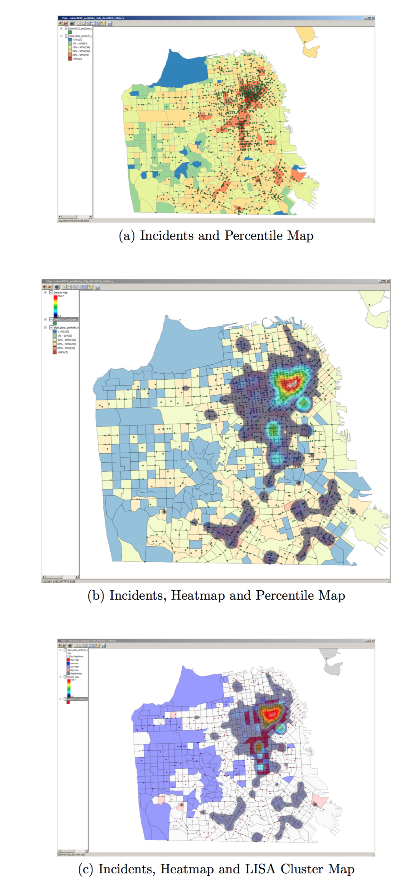
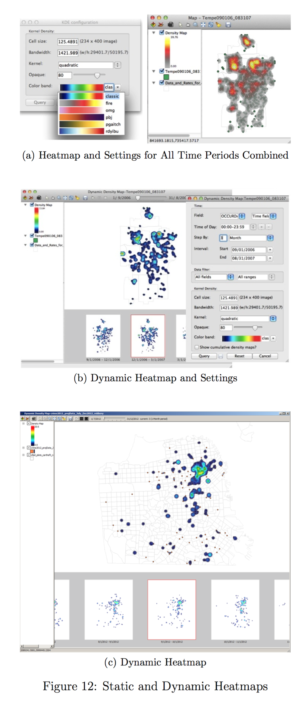
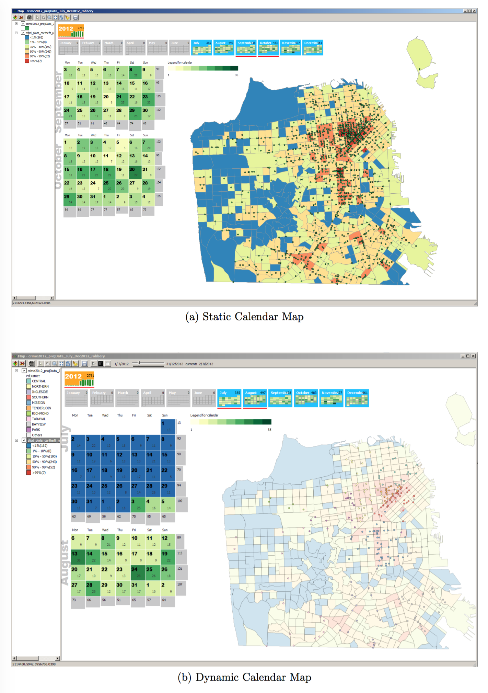
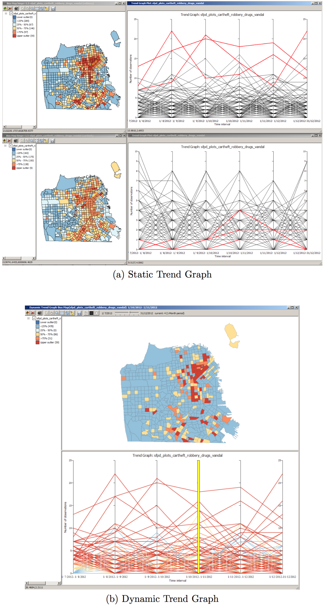
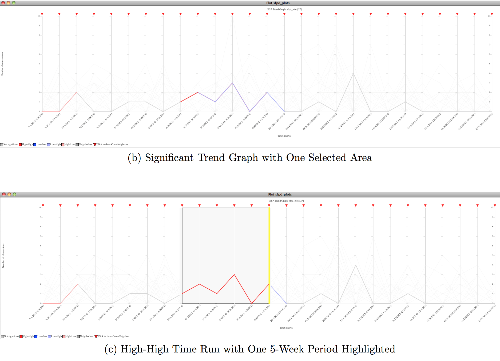
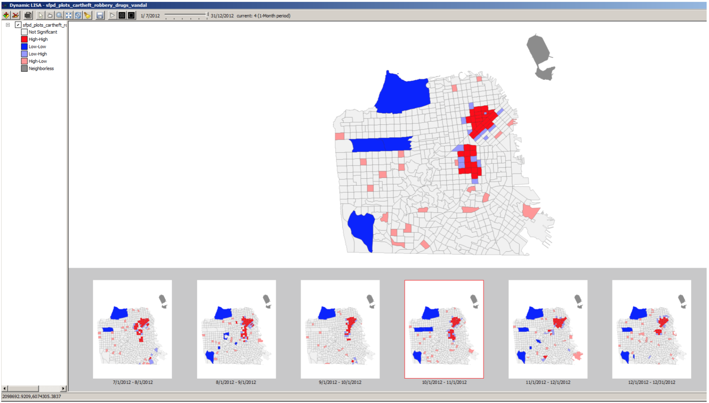

Introducing CAST 0.1 Alpha
CAST is a free and open-source, cross-platform program (Windows, Mac OSX and Linux) designed to detect spatial patterns and trends for event and area data. The idea is to make it easy to represent different dimensions and contexts of space-time data (such as crime data) in views such as maps, graphs, and calendars that can be animated over time.

The program runs on three operating systems: Windows, MacOSX and Linux (Windows and Mac OSX are available for download; Linux needs to be compiled from the source code). It is designed as a user-friendly interface to PySAL, the spatial analysis library developed by Dr. Serge Rey and colleagues in Python that serves as the code base for its functionality.
The interface of CAST is similar to GeoDa s but GeoDa is designed for the analysis of one area-level dataset at a time while CAST can display multiple shapefiles simultaneously as layers in one view and/or as separate views. Like GeoDa, CAST reads so-called shapefiles, the geographic file format related to ESRI's ArcGIS software, the most widely used commercial Geographic Information System (GIS).
What you will need...
If all you have is a *.csv text file with XY coordinates, you can use the GeoDa software to create a point shapefile file and save it for import into CAST. For instance, see the sample data from San Francisco available here.
CAST allows analysts to aggregate point data on the fly to areas and to specified time periods (and to save the space- and time-aggregated data as a new dbf file). To analyze spatial data over time, a date field needs to be specified. For point shapefiles, each record will have a time stamp, often with the date and time (for the San Francisco sample data, use the Date and Time fields). You can specify custom formats for these date and time fields in CAST but for automatic detection of the date field, it is easiest to have a separate field for the date and time of an event. For instance, if the data field is recorded as ’05/01/2011 00:00:00’, then analysts should turn this into two separate fields such as date = ’05/01/2011’ and time = ’00:00:00’, before loading the data into CAST. For polygon shapefiles without point data, crimes need to already be aggregated for specific time periods (one period per column).
What You Can Do with CAST
Like its sister software GeoDa, CAST provides a user-friendly and graphical interface to methods of exploratory spatial data analysis (ESDA) for space-time data. All ESDA views are linked to allow analysts to explore relationships across these dimensions. Using statistical significance tests, CAST includes several cluster maps and trend graphs to detect where concentrations of cevents are higher or lower than expected.
Multi-layers in CAST
As is common in Geographic Information Systems, CAST allows analysts to load multiple layers in one view. The figures below show examples of how multiple layers can be used in CAST, for instance, to display incidents of robberies with percentile maps, heatmaps, and cluster maps.
Dynamic Maps and Graphs
Below is an example of the settings and results for a heatmap, with crime incidents pooled across time. The interface for dynamic cluster maps contains a series of micromaps for each specified time period (such as 1-month intervals) below a larger map of the respective time period that is highlighted in the micromaps. The micromaps can be displayed or hidden by right-clicking on the main map. Further, the animation across time can be started, paused and stopped through the controls in the toolbar for all dynamic maps and graphs (including calendar maps and trend graphs).

Dynamic Calendar Maps and Graphs
Calendar maps integrate two monthly calendar views with a regular CAST map view: Micro calendars from January to December are shown with enlarged versions of two months that correspond to a selection of months in the micro calendars. The days in the two calendars are color-coded based on the number of crimes (events) that occurred on each day, with lighter green colors for smaller frequencies and darker green shading for larger ones. In addition, the enlarged two-month calendar also includes the date and frequency count for each day. Finally, bar charts on the vertical axis of the calendar summarize the number of crimes for each week while bar charts on the horizontal axis display the sum of crimes for each day of the week.

In the dynamic version of the calendar map each day in the enlarged calendars is highlighted sequentially and the corresponding points for this day are displayed on the map.
Dynamic Trend Graphs
To track frequencies of crime over time, CAST includes three types of trend graphs: 1) a stand-alone static trend graph with crime counts on the vertical axis and time periods on the horizontal axis, 2) a dynamic trend graph that integrates this stand-alone trend graph with a map view, and 3) a significant trend graph that highlights statistically significant time runs within the time series associated with an area.


Dynamic Cluster Maps
CAST contains two types of cluster maps for area data that are based on statistical tests: local Moran’s I and local G statistics. The local Moran’s I test that the Local Indicators of Spatial Association (LISA) maps are based on assesses to what extent values in one area are similar to the average value of neighboring areas. The LISA map displays four significant options: Hotspots (high values in a given area surrounded by high values in a neighboring area), coldspots (low area values near low neighboring values), and two so-called spatial outliers (low values surrounded by high and vice versa).

Acknowledgments
The development of GeoDa has been supported by the National Institute of Justice, the National Science Foundation, and the National Institutes of Health.
Support
The Openspace listserv supports technical questions about CAST.
Contact
Questions? Contact us.